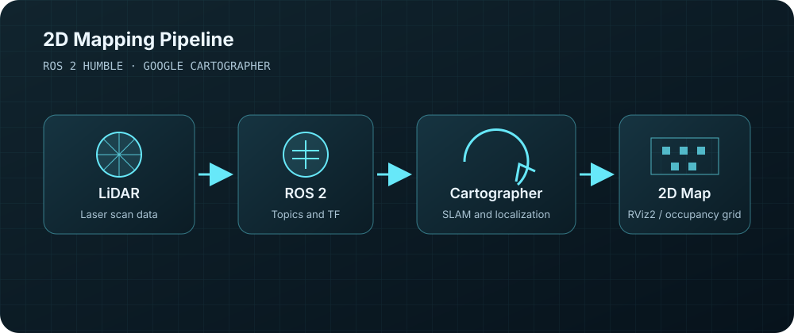

Project Overview_
This project explores simultaneous localization and mapping (SLAM) with Google Cartographer and ROS 2 Humble. LiDAR readings help create a 2D map as the robot estimates its position in the environment. The workflow includes configuring Cartographer, integrating sensor data, handling ROS 2 TF frames, visualizing the map in RViz2, and generating an occupancy grid map.

LiDAR scans → Cartographer SLAM → 2D occupancy map
Key Features_
- 2D SLAM using Google Cartographer
- Real-time map generation from LiDAR data
- Robot localization and ROS 2 TF integration
- RViz2 visualization of mapping data
- Generate and save occupancy grid maps
- Custom Cartographer configuration using Lua
Tech Stack_
- Ubuntu 22.04
- ROS 2 Humble
- Google Cartographer
- RViz2
- LiDAR
- Python and Lua